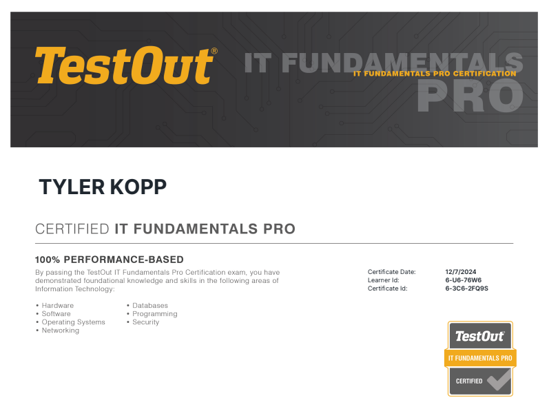

Certifications & Activities
Credentials, honors, and projects
Certifications, academic activities, and technical projects related to cybersecurity and technology.
Certification
IT Fundamentals Pro
The TestOut IT Fundamentals Pro certification is a 100% performance-based exam. Passing it demonstrated foundational knowledge and hands-on skills across core areas of information technology.
- Issuer
- TestOut
- Earned
- December 7, 2024

Academic Activities & Honors
Academic involvement
-
UCF Cybersecurity Program
Pursuing cybersecurity-focused coursework as part of my Information Technology degree at UCF.
-
Dean's List · UCF (3x)
Recognized three times for academic achievement at the University of Central Florida.
-
Dean's List · Seminole State (2x)
Recognized twice for academic achievement while earning my Associate in Arts.
-
Phi Theta Kappa
Member of the international honor society for two-year college students.
Technical Projects
Projects outside the classroom
-
Local AI Agent Orchestration Lab
Set up a locally run workspace to coordinate AI agents, configured a web-builder subagent, and reviewed tool permissions and least-privilege boundaries. Development and testing are ongoing.
-
Vacation Rental Website
Developed and deployed a responsive multi-property website with individual listing pages, booking links, and mobile layouts, and troubleshot domain, DNS, and deployment issues.
-
Mortgage Loan Software-to-CRM Integration
Mapped application and closing-date fields into CRM contacts, tested updates to existing contacts, and troubleshot synchronization and data-formatting behavior.
-
Bilingual AI Missed-Call Assistant
Configured English and Spanish call handling, FAQ responses, appointment actions, and transcript delivery to loan officers for follow-up.
-
This e-Portfolio
Hand-coded this responsive, accessible website and deployed it through a GitHub-to-Netlify workflow, with security headers configured at the host.